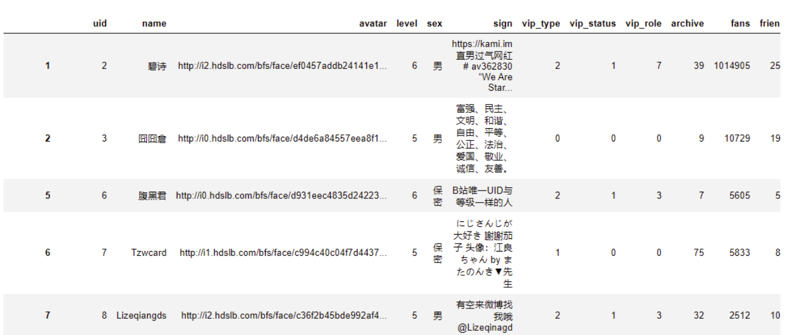

一、用户签名
1亿B站用户群体十分庞大，文本中蕴含着这个群体的认知信息(如兴趣、身份、座右铭等)，如果能用签名训练word2vec词向量模型，说不定就有利用这个模型，对每个用户签名进行量化, 对用户进行分类。 本文要解决
- 构建语料训练出模型
- 简单看看模型训练效果
二、准备语料
Kaggle网有1亿B站用户数据集，下载地址
之前分享过 数据集 | 哔哩哔哩 1 亿用户数据 ， 阅读此文可以熟悉pandas的一些基本操作，如数据读取、文本操作等。
#从kaggle下载B站1亿用户数据
import pandas as pd
df = pd.read_csv('User.csv')
#签名非空的记录
df2 = df.dropna(subset=['sign'])
print('数据集用户数量: ', len(df))
df2
Run
数据集用户数量: 100000000

将9093092个非空签名汇总到 B站用户签名语料.txt
with open('B站用户签名语料.txt', 'w', encoding='utf-8') as f:
f.write(''.join(df2.sign.tolist()))
代码运行后，得到 302M B站用户签名语料.txt 。
三、训练Word2Vec
我使用的自己 未公开 的cntext 2.0.0版本， Bug频出，等调整好了再公开。
3.1 安装cntext
将 cntext-2.0.0-py3-none-any.whl 放置于桌面，打开 cmd (苹果电脑打开terminal)， 输入cd desktop
cd desktop
之后在 cmd (苹果电脑打开terminal) 中使用pip3 安装
pip3 install cntext-2.0.0-py3-none-any.whl
文末有cntext-2.0.0-py3-none-any.whl获取方式
3.2 训练word2vec
cntext训练时候Word2Vec模型参数
- window = 6
- vector_size = 100
#cntext2.0.0未公开，获取2.0.0请阅读文末获取方式
import cntext as ct
model = ct.W2VModel(corpus_file='B站用户签名语料.txt')
model.train(window = 6, vector_size = 100)
Run
Starting Processing Corpus ...
Start Training! This may take a while. Please be patient...
Traning word2vec model took 1329 seconds
Note: The Word2Vec model has been saved to output/Word2Vec
耗时1329s， 模型训练完成！得到的模型文件，如下截图
四、使用word2vec
4.1 读取模型
使用gensim录入模型 “B站用户签名语料.100.6.bin” ,
from gensim.models import KeyedVectors
w2v = KeyedVectors.load('output/Word2Vec/B站用户签名语料.100.6.bin')
print('模型词汇量: ', len(w2v.wv))
Run
模型词汇量: 343650
4.2 查询某词的词向量
w2v.wv['高冷']
Run
array([-1.1872591e+00, -1.2438694e+00, -9.4200081e-01, -4.0355644e+00,
3.3588424e-01, -4.2525402e-01, -4.1175735e-01, 1.8802526e+00,
-3.5992053e-01, 2.8361969e+00, -1.1437206e+00, 4.4662678e-01,
1.2098696e+00, 7.2761238e-02, 3.0633178e-01, 6.7496544e-01,
-3.0175522e-01, -1.1573459e+00, -7.4999934e-01, 1.6484009e+00,
1.3102854e+00, 1.0134944e+00, 1.0711597e+00, -1.2194906e+00,
2.1523576e+00, -4.4606316e-01, 1.0664939e+00, 5.3640699e-01,
1.1061722e+00, -2.7679250e-01, 8.6652651e-02, 1.6876321e-02,
6.3120401e-01, -1.6914845e-02, 9.6446878e-01, 1.7046971e+00,
-1.7395537e+00, 1.7914917e+00, -1.3069035e+00, 6.6770411e-01,
-3.4902021e-01, -1.3345592e-02, -4.3595994e-01, -5.1443088e-01,
1.0884547e+00, -3.3695351e-02, -5.7088321e-01, 1.4533000e+00,
8.0498764e-03, 9.2341286e-01, -1.6219637e-01, -2.5400406e-01,
-1.4215972e-01, 7.1577376e-01, -1.2812414e+00, -1.7630520e-01,
-1.7600318e+00, -1.4759690e+00, -2.3313001e-01, -8.8995326e-01,
4.5749718e-01, 2.1950055e-02, 2.5749078e-01, -7.6623499e-01,
3.1834408e-03, 7.2732526e-01, -2.5459883e+00, -1.5240467e+00,
2.4574394e+00, 7.3715413e-01, 2.2769032e+00, 1.7492032e+00,
-4.1084039e-01, 6.4300962e-02, 6.2454116e-01, -4.0486854e-02,
7.7100635e-01, -1.9729427e+00, -8.4130460e-01, -3.0110097e-01,
-1.0786959e+00, -1.9136167e+00, -1.7037696e-01, -7.3208618e-03,
4.8502678e-01, -1.0348318e+00, 3.1141058e-01, 2.9913974e-01,
-2.1714316e-01, -3.1645024e+00, 7.0972210e-03, 7.8701675e-01,
-2.2510442e-01, -9.8428482e-01, 1.0685140e+00, 2.1938827e+00,
-9.1963351e-01, 6.3011467e-01, -1.1531134e+00, -9.2123538e-02],
dtype=float32)
4.3 查看近义词
通过给定词语，查看其近义词，可以了解模型训练的好坏。语义捕捉的合理，说明语料合理，模型训练的好。
#列表中可以传入任意多个词，这里大邓偷懒，都只传入了一两个词
w2v.wv.most_similar(['高冷'], topn=20)
Run
[('腹黑', 0.8282514810562134),
('呆萌', 0.8148132562637329),
('傲娇', 0.7791209816932678),
('逗比', 0.7720615863800049),
('闷骚', 0.7617782354354858),
('精分', 0.7545589208602905),
('文静', 0.7545390725135803),
('慢热', 0.7387350797653198),
('自恋', 0.7299264669418335),
('淑女', 0.7261008620262146),
('耿直', 0.7238353490829468),
('帅气', 0.7233086824417114),
('暖男', 0.720333456993103),
('内向', 0.7159033417701721),
('蠢', 0.7157402038574219),
('逗逼', 0.7091616988182068),
('神经质', 0.7085140347480774),
('女汉子', 0.707956850528717),
('毒舌', 0.7058071494102478),
('逗', 0.7048983573913574)]
w2v.wv.most_similar(['女汉子'], topn=20)
Run
[('女汉纸', 0.8832258582115173),
('汉子', 0.8506060838699341),
('萌妹子', 0.8475067615509033),
('暖男', 0.8445340394973755),
('女神经', 0.838117241859436),
('萌妹纸', 0.8303463459014893),
('闷骚', 0.8296418786048889),
('妹纸', 0.8289912343025208),
('软妹子', 0.8211091756820679),
('腹黑', 0.8019399046897888),
('汉纸', 0.7941007614135742),
('糙汉子', 0.7915611267089844),
('孩纸', 0.783301055431366),
('处女座', 0.7807960510253906),
('腐女', 0.779699444770813),
('宅女', 0.7794589400291443),
('软妹', 0.7725212574005127),
('小萝莉', 0.7603519558906555),
('摩羯座', 0.7602179646492004),
('呆萌', 0.7555979490280151)]
w2v.wv.most_similar(['流氓'], topn=20)
Run
[('风骚', 0.7411526441574097),
('气质', 0.7314842343330383),
('霸道', 0.7147162556648254),
('伪装成', 0.7128302454948425),
('天生', 0.7044478058815002),
('十足', 0.6987764835357666),
('斯文', 0.6978859901428223),
('禽兽', 0.6960264444351196),
('病态', 0.6890178322792053),
('才华', 0.6817525029182434),
('正派', 0.6785053610801697),
('文静', 0.6763062477111816),
('聪慧', 0.6758238077163696),
('自恋', 0.6680983901023865),
('凡夫俗子', 0.6680223345756531),
('冷血', 0.6673165559768677),
('白痴', 0.666796863079071),
('清纯', 0.6666175127029419),
('愤青', 0.6663431525230408),
('颇具', 0.6648291945457458)]
w2v.wv.most_similar(['内向'], topn=20)
Run
[('外向', 0.8674373030662537),
('腼腆', 0.8610992431640625),
('开朗', 0.8451307415962219),
('神经质', 0.8253246545791626),
('孤僻', 0.8227512836456299),
('胆小', 0.7949897050857544),
('慢热', 0.7939849495887756),
('大大咧咧', 0.7869692444801331),
('古怪', 0.7838969230651855),
('情绪化', 0.7805034518241882),
('幽默', 0.7713088989257812),
('不爱说话', 0.76982182264328),
('活泼', 0.7689502239227295),
('闷骚', 0.766051173210144),
('记仇', 0.7653043270111084),
('极度', 0.7642502784729004),
('敏感', 0.7624457478523254),
('自卑', 0.7609980702400208),
('很宅', 0.7600659132003784),
('矫情', 0.7573622465133667)]
w2v.wv.most_similar(['牛', '牛B'], topn=10)
Run
[('牛皮', 0.7266886830329895),
('叼', 0.7169520258903503),
('吊', 0.7075901627540588),
('流弊', 0.6949068307876587),
('张嘴', 0.6911835074424744),
('逼人', 0.6845391988754272),
('欠揍', 0.6771396994590759),
('这块', 0.6755802035331726),
('他妈', 0.672274112701416),
('像不像', 0.6720238924026489),
('长帅', 0.669898509979248),
('跟个', 0.6674190163612366),
('仁波切', 0.6618945002555847),
('隔壁老王', 0.6596662998199463),
('捞', 0.6594889760017395),
('能装', 0.658306896686554),
('盗号狗', 0.6573488116264343),
('竟敢', 0.654305636882782),
('牛掰', 0.6534903049468994),
('老实', 0.6533665657043457)]
w2v.wv.most_similar(['色'], topn=20)
Run
[('不遇倾城', 0.7234371304512024),
('柔', 0.6971151232719421),
('温', 0.696250855922699),
('浮', 0.6961503028869629),
('牡丹', 0.6916242241859436),
('薄', 0.6892343759536743),
('飘逸', 0.687305212020874),
('丝', 0.6816737651824951),
('彩', 0.6801170110702515),
('骨', 0.6786245703697205),
('细', 0.6709766387939453),
('春', 0.6705066561698914),
('羽', 0.6662278771400452),
('沁', 0.6659229397773743),
('华', 0.6649417281150818),
('唇', 0.6640968322753906),
('露', 0.6638047695159912),
('墨', 0.663625180721283),
('阳', 0.6616363525390625),
('碧', 0.6599227786064148)]
五、获取资源
内容整理不易， 本文内容分免费和付费部分。 免费部分可以直接下载数据、构建语料、使用word2vec模型。 付费部分主要是cntext，用于训练word2vec模型。 如果对本文感兴趣，可加微信 372335839， 备注「姓名-学校-专业」
-
免费获取
-
1亿用户数据集 https://www.kaggle.com/datasets/beats0/bilibili-user
-
B站用户签名语料.100.6.bin 链接: https://pan.baidu.com/s/1SM6fWZ3Jt7VFaZ2dedt5CA 提取码: bzmp
-
-
50元 获得cntext-2.0.0-py3-none-any.whl